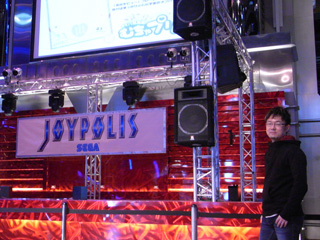

東京ジョイポリスのプロモーション担当である井手さん
そもそも今回のコラボ企画の発端は、東京ジョイポリスのプロモーション担当である井手佐知子さんが、今年はソニック生誕20周年の記念すべき年なので、東京ジョイポリスでもソニックと連動した様々な企画を展開していきたいと考え、その手始めにソニックのサウンドトラックを館内BGMとして使用するプランを提案されたことが出発点だったのです。
井手さんは、ソニック関連のCDを何枚か聴き、ゲーム内のストーリーや設定などの先入観は抜きに、その曲調だけで判断しカラーズのサントラを選んだとのこと。
音楽そのものから感じる、明るく楽しくバラエティに富んだ曲調や雰囲気がジョイポリスに合うだろうな、という印象を持ったとのことでした。
ナイス判断です！ありがとうございます！
東京ジョイポリスの メインモニタ前で確認！
さて、実際ジョイポリスでカラーズのサントラ聴いてみてどうだった？
というのが気になるところだと思うのですが、第一印象……
すごく雰囲気に合ってる！
すごく雰囲気に合ってる！
です。
2回言いましたけども。
僕が訪れた時、扉を開けたタイミングで最初に聴こえてきたのは、スターライトカーニバルのエリアマップの曲 "Area - Starlight Carnival"この曲の電飾キラキラ感がとてもマッチしてました。大音量で流れるオーケストラ関連の曲は、施設の雰囲気をゴージャスでダイナミックに演出していましたし、もちろんアップテンポなアクションステージの曲も楽しく賑やかに演出していました。意外なところでは、カットシーンの曲がユニークな雰囲気を醸し出していました。帰りがけにはタイミングよく、エンディングテーマ曲の"Speak With Your Heart"も大音量で聴くことが出来て個人的にも大満足でした。
東京ジョイポリスにあるプライズ景品のソニックグッズ！
「ソニック カラーズ」の舞台である『宇宙のテーマパーク』を彩るために作られた音楽を、実在するテーマパークで使用する案は、とても気が利いていてよい試みだと思います。これが「ソニックカラーズ」の音楽だと知っていても、知らなくてもテーマパークの楽しい雰囲気の演出に貢献出来ていると感じました。サウンドトラックはゲームの2次商品ですが、さらにそこから先の展開としてもユニークだと思いました。普段ではなかなか機会がないような大音量でも聴く事が出来ますので、興味のある方は是非一度、足を運んでチェックしてみて欲しいです！
現状、カラーズのサントラを館内BGMとして使用する期限は特に決めていないとのことですが、5月以降にはリニューアルも検討しているとのことでした。少なくとも5月までは聴けると思います！
これに限らず、東京ジョイポリスでは今年、ソニック生誕20周年と連動した様々な企画を展開して行く予定とのこと、要チェックです！
ジョイポリスの最新情報はツイッターからもチェックできます↓
Twitter: http://twitter.com/#!/TokyoJoypolis/